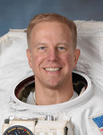

Lyndon B. Johnson Space Center
Houston, Texas 77058
|
National Aeronautics and Space Administration Lyndon B. Johnson Space Center Houston, Texas 77058 |
 |
Biographical Data |
||
Timothy L. Kopra (Colonel, U. S. Army, Ret.)
NASA Astronaut
Pronunciation: TIM-uh-thee COPE-rah
PERSONAL DATA: Born on April 9, 1963, in Austin, Texas. Married to the former Dawn Lehman of Lewisburg, Kentucky. They have two children. He enjoys running, swimming, reading, home improvement projects, and spending time with family and friends. His mother, Martha Kopra, resides in Austin, Texas. His father, Dr. Lennart Kopra, is deceased. Dawn’s parents, Charles and Betty Lehman, reside in Lewisburg, Kentucky.
EDUCATION: McCallum High School, Austin, Texas, 1981. Bachelor of Science, United States Military Academy, West Point, New York, 1985. Master of Science in Aerospace Engineering, Georgia Institute of Technology, 1995. Master of Strategic Studies, U.S. Army War College, 2006. Masters of Business Administration, Columbia University and London Business School, 2013.
ORGANIZATIONS: Society of Experimental Test Pilots; Army Aviation Association of America; American Helicopter Society; United States Military Academy Association of Graduates; West Point Society of Greater Houston; Columbia Business School Alumni Association, London Business School Alumni Club.
SPECIAL HONORS: Empire Test Pilot School Award for the Best Developmental Test Thesis, Class 110, U.S. Navy Test Pilot School (1996); Silver and Bronze Order of Saint Michael, Army Aviation Award (2009, 1999). Awarded the Legion of Merit, Bronze Star Medal, two Meritorious Service Medals, Air Medal, Army Commendation Medal, Army Achievement Medal, NASA Space Flight Medal, NASA Distinguished Service Medal, and various other service awards.
PREVIOUS EXPERIENCE: Kopra received his commission as a second lieutenant from the United States Military Academy in May 1985 and was designated as an Army aviator in August 1986. He then completed a three-year assignment at Fort Campbell, Kentucky, where he served as an aeroscout platoon leader, troop executive officer, and squadron adjutant in the 101st Airborne Division’s air cavalry squadron. In 1990, he was assigned to the 3rd Armored Division in Hanau, Germany, and was deployed to Southwest Asia, where he served in Operations Desert Shield and Desert Storm. He completed his tour in Germany as an attack helicopter company commander and an operations officer. After returning to the United States and completing graduate studies at Georgia Tech, he was selected in 1995 to attend the U.S. Naval Test Pilot School. Upon graduation, he was assigned to the U.S. Army Aviation Technical Test Center, where he worked as an experimental test pilot on various projects and served as the developmental test director for the Comanche helicopter program. Other military schools include the Army Parachutist Course, Pathfinder Course, Air Assault Course, the Combined Services Staff School, and the Command and General Staff College. Kopra retired from the U.S. Army in November 2010.
NASA EXPERIENCE: Kopra was assigned to NASA’s Johnson Space Center in Houston, Texas in September 1998 as a vehicle integration test engineer. In this position, he primarily served as an engineering liaison for space shuttle launch operations and International Space Station hardware testing. He was actively involved in the contractor tests of the Extravehicular Activity (EVA) interfaces for each of the space station truss segments.
Selected as an astronaut in July 2000, Kopra began his initial training the following month. Kopra completed two years of intensive space shuttle, International Space Station, and T-38 flight training. He then served in the Space Station Branch of the Astronaut Office, where he was involved in the testing of crew interfaces for two space station pressurized modules as well as the implementation of support computers and operational Local Area Network on the station.
After completing a Russian language immersion course in Moscow, Russia, Kopra began training in July 2005 for a long duration space flight mission. In September 2006, Kopra served with a six-person crew aboard the National Oceanic and Atmospheric Administration’s (NOAA) Aquarius underwater laboratory as part of NASA Extreme Environment Mission Operations (NEEMO) 11. During the week-long mission that served as an analog for lunar operations, the crew tested space suit design concepts, communication protocols, construction techniques, and the use of robotic devices. Kopra completed training in Russia, Japan, Germany and Canada at each of the international partner training sites and served as a backup crew member to Expeditions 16 and 17. He then served as prime crew member for Expedition 20. Kopra completed his first space flight in 2009, logging two months in space and completing one spacewalk. Upon his return, Kopra was assigned as a mission specialist for STS-133. After the launch was delayed, Kopra sustained an injury that prevented him from flying. He then served as Chief of the Vehicle Integration Test Office and is now assigned as a flight engineer to Expedition 46 and Commander for Expedition 47.
SPACE FLIGHT EXPERIENCE: On Expedition 20, Kopra served as a flight engineer aboard the International Space Station. He launched with the STS-127 crew aboard the Space Shuttle Endeavour on July 15, 2009 and returned to Earth with the STS-128 crew aboard the Space Shuttle Discovery on September 11, 2009. During the two shuttle missions and tour of duty aboard station, Kopra performed one spacewalk totaling 5 hours and 32 minutes, executed assembly tasks with the space station and Japanese robotic arms, and conducted numerous science experiments.
SOCIAL MEDIA: Twitter: https://twitter.com/astro_tim
OCTOBER 2014